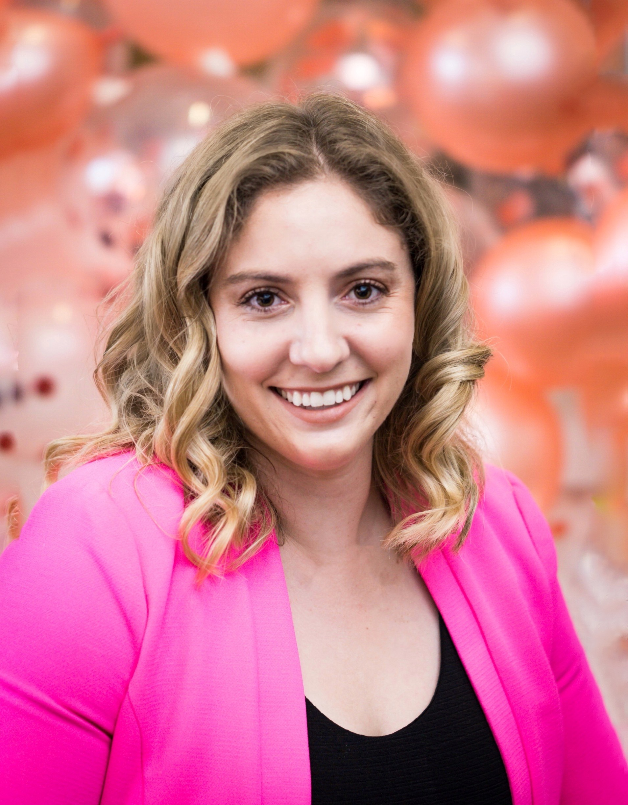

Chloe Gharios is a Civil Engineering Associate at the Los Angeles Department of Water and Power where she started in 2017. She earned her Bachelors of Science in Civil Engineering from Cal State Fullerton in 2017 and Masters of Science in Engineering Management from USC in 2020.
In her current role she get to make sure the the people of Los Angeles have access to safe and reliable power. It means the world to her to be able to make an impact on the community with every single project.
Apart from supporting her community, she enjoys spending time with family, traveling, cooking, playing with her fur baby and soccer.